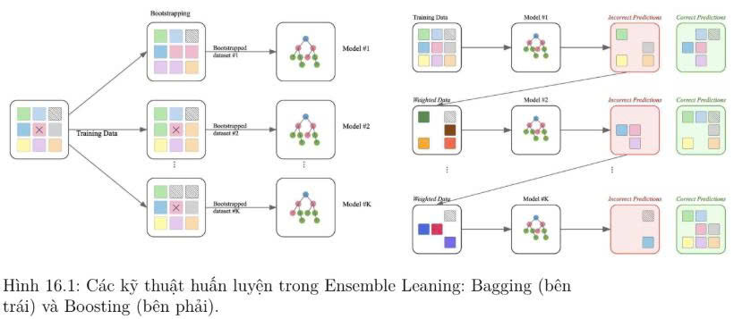
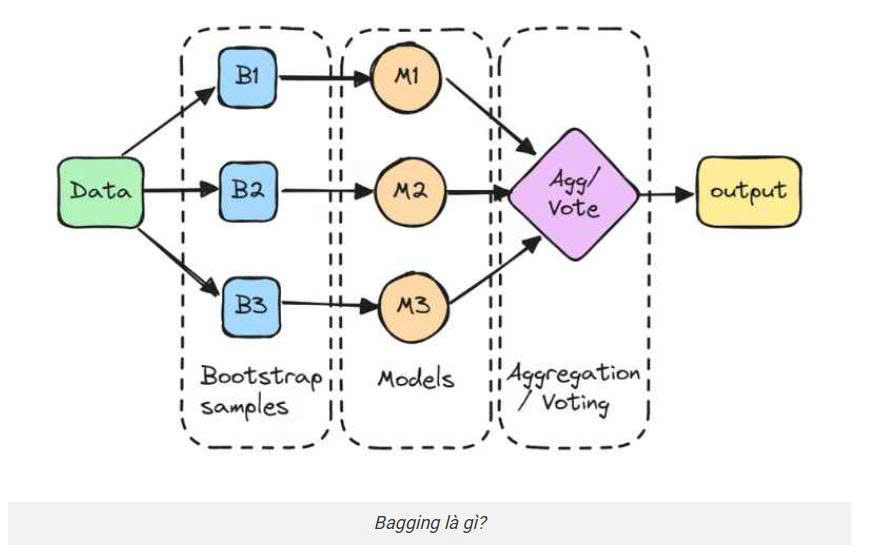
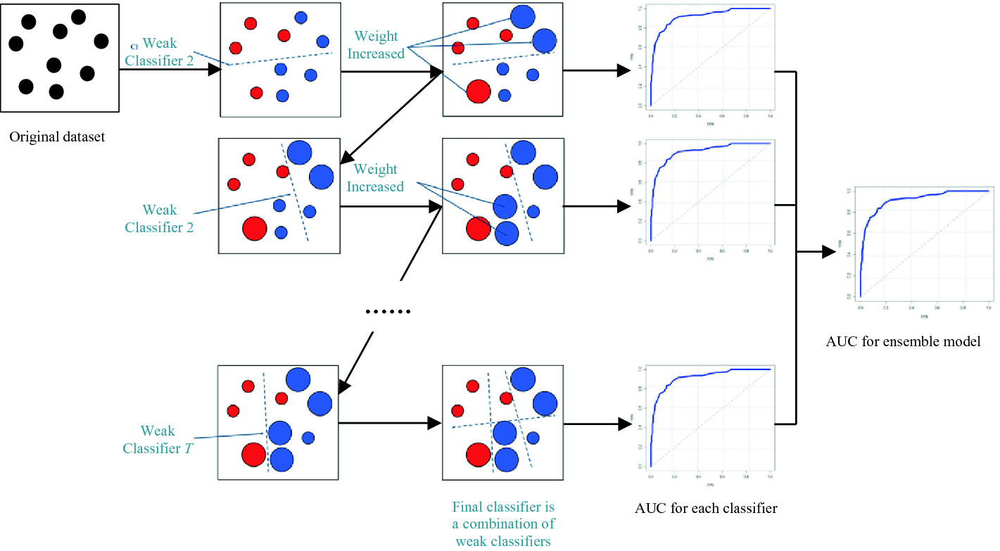

I. Khái niệm
Trong học máy, một mô hình đơn lẻ thường phải đánh đổi giữa thiên lệch (bias) và phương sai (variance). Mô hình phức tạp có thể khớp dữ liệu huấn luyện tốt (thiên lệch nhỏ) nhưng dễ dao động trước mẫu mới (phương sai lớn); mô hình đơn giản thì ngược lại.
Ensemble learning đề xuất một con đường thứ ba: kết hợp nhiều người học yếu theo những nguyên lý thống kê/thuật toán để vừa giảm phương sai (bằng trung bình hóa trên các người học ít tương quan) vừa giảm thiên lệch (bằng học tuần tự, thích nghi vào điểm khó), đồng thời mở rộng biên quyết định—yếu tố đã được chứng minh liên hệ chặt chẽ với năng lực khái quát hóa.
Các base learners có thể cùng loại (ví dụ toàn bộ là cây quyết định) hoặc khác loại. Hai kỹ thuật ensemble phổ biến nhất là Bagging và Boosting.
- Bagging (Bootstrap Aggregating): huấn luyện song song nhiều người học trên các mẫu bootstrap, rồi bình quân/biểu quyết → chủ yếu giảm phương sai.
- Boosting: huấn luyện tuần tự, thích nghi; mỗi người học mới tập trung vào các ví dụ mà người học trước làm sai → thường giảm thiên lệch, đồng thời tăng margin.

Trong thực hành dữ liệu bảng (tabular data), cây quyết định là base learner ưa dùng do chi phí huấn luyện thấp, mô hình hóa phi tuyến tốt và dễ đa dạng hóa. Bạn đọc có thể tham khảo qua mô hình Decision Tree quà bài viết Decision Tree
Tại sao Ensemble hoạt động tốt?
Giả sử có \(K\) mô hình độc lập, mỗi mô hình có tỷ lệ lỗi \(\varepsilon < 0.5\). Xác suất để đa số kết luận sai giảm theo cấp số nhân khi \(K\) lớn (định lý Condorcet). Ngoài ra, ensemble giúp giảm phương sai (variance) và/hoặc giảm bias.
II. Bagging (Bootstrap Aggregating)
Bagging (viết tắt của Bootstrap Aggregating) là một chiến lược tổ hợp trong học máy, nhằm nâng cao độ tin cậy và độ chính xác của các mô hình dự đoán. Phương pháp này bao gồm việc tạo ra nhiều tập con từ dữ liệu huấn luyện thông qua lấy mẫu ngẫu nhiên có hoàn lại (random sampling with replacement).
1. Nguyên lý hoạt động
- Chuẩn bị dữ liệu: Làm sạch và tiền xử lý dữ liệu. Sau đó chia dữ liệu thành tập huấn luyện và tập kiểm tra (test).
- Bootstrap sampling: Từ tập huấn luyện gốc \(D\) có \(N\) mẫu, tạo ra \(K\) tập con (mỗi tập kích thước \(N\)) bằng cách lấy mẫu ngẫu nhiên có hoàn lại. Mỗi tập con có khoảng 63.2% mẫu gốc, phần còn lại là out-of-bag (OOB).
- Huấn luyện song song: Trên mỗi tập bootstrap, huấn luyện một base learner độc lập (thường là cây quyết định sâu, không cắt tỉa).
- Kết hợp dự đoán: Kết hợp các dự đoán từ tất cả mô hình. :
- Phân loại: majority voting (bỏ phiếu đa số).
- Hồi quy: lấy trung bình các kết quả.

2. Đánh giá Out-of-Bag (OOB)
Một tính chất thú vị của bootstrap là: với tập dữ liệu có \(n\) mẫu, xác suất để một mẫu cụ thể không được chọn trong một lần lấy mẫu là \(1 - \frac{1}{n}\). Sau \(n\) lần lấy (có hoàn lại), xác suất để mẫu đó không xuất hiện trong tập bootstrap là:
Điều này có nghĩa là mỗi cây chỉ sử dụng khoảng 63.2% số mẫu gốc để huấn luyện, 36.8% số mẫu còn lại (gọi là Out-of-Bag samples – OOB) không được dùng để xây dựng cây đó. Các mẫu OOB đóng vai trò như một tập kiểm tra tự nhiên, không cần phải tách riêng tập validation.
3. Ưu nhược điểm của Bagging
- Giảm phương sai (variance): Bagging huấn luyện nhiều mô hình cơ sở trên các tập dữ liệu khác nhau, nhờ đó tạo ra sự đa dạng giữa các mô hình. Khi kết hợp lại, sai số giữa các mô hình có thể triệt tiêu lẫn nhau, giúp dự đoán trở nên ổn định và đáng tin cậy hơn.
- Hạn chế quá khớp (Overfitting ): Do các mô hình được huấn luyện trên những phiên bản dữ liệu khác nhau, chúng tập trung vào những khía cạnh khác nhau của dữ liệu. Điều này giúp hệ thống tổ hợp khái quát hóa tốt hơn trên dữ liệu mới.
- Linh hoạt: Bagging có thể áp dụng cho nhiều loại mô hình như cây quyết định, mạng nơ-ron, máy vector hỗ trợ (SVM),… Điều này cho phép người dùng tận dụng ưu điểm của các thuật toán khác nhau trong một hệ thống tổ hợp.
- Tốn nhiều tài nguyên tính toán: Khi số lượng mô hình tăng lên, thời gian xử lý sẽ chậm lại và yêu cầu tính toán tăng cao. Vì vậy, bagging không phù hợp với các ứng dụng yêu cầu phản hồi thời gian thực. Các hệ thống tính toán phân tán hoặc các cụm máy chủ với nhiều lõi xử lý là lựa chọn lý tưởng để triển khai bagging trên các tập dữ liệu lớn.
III. Boosting
Boosting là một họ kỹ thuật học máy ensemble tiên tiến, hoạt động bằng cách xây dựng mô hình theo kiểu nối tiếp. Nó kết hợp nhiều mô hình dự đoán yếu (weak learners) lại với nhau để tạo thành một mô hình dự đoán mạnh (strong learner) duy nhất, với mục tiêu chính là tăng cường độ chính xác tổng thể.
Khác với các phương pháp song song như Bagging, điểm cốt lõi của Boosting là các mô hình sau học hỏi từ lỗi sai của các mô hình trước đó. Nó tập trung vào những điểm dữ liệu khó dự đoán, liên tục cải thiện hiệu năng qua từng vòng lặp, giống như một học sinh nỗ lực sửa chữa những lỗi sai của mình để ngày càng tiến bộ hơn.

1. Nguyên lý tổng quát
- Học tuần tự (Sequential Learning): Các mô hình không được huấn luyện cùng lúc. Mô hình thứ hai ra đời dựa trên kết quả sai sót của mô hình thứ nhất, mô hình thứ ba lại học từ sai sót của mô hình thứ hai, cứ thế tiếp diễn.
- Với mỗi bước \(t = 1 \to T\):
- Huấn luyện base learner \(h_t\) trên dữ liệu có trọng số.
- Tính sai số \(\varepsilon_t\) của \(h_t\).
- Tính trọng số \(\alpha_t\) cho \(h_t\) (thường \(\alpha_t = \frac{1}{2}\ln\frac{1-\varepsilon_t}{\varepsilon_t}\)).
- Cập nhật trọng số mẫu: tăng trọng số các mẫu bị sai, giảm các mẫu đúng.
- Kết hợp kết quả (Weighted Voting/Aggregation): Dự đoán cuối cùng được lấy bằng cách tính tổng hoặc bỏ phiếu có trọng số từ tất cả các mô hình yếu. Các mô hình có độ chính xác cao hơn sẽ có tiếng nói (trọng số) lớn hơn trong quyết định cuối cùng.
- Kết hợp tuyến tính có trọng số \(\alpha_t\) của các \(h_t\).
2. Ưu nhược điểm của Boosting
- Điểm mạnh lớn nhất và được công nhận rộng rãi nhất của Boosting chính là khả năng mang lại độ chính xác dự đoán vượt trội. Trong nhiều bài toán phân loại và hồi quy, đặc biệt là với dữ liệu dạng bảng (tabular data), các mô hình Boosting thường cho kết quả tốt hơn đáng kể so với nhiều thuật toán khác, kể cả Deep Learning trong một số trường hợp.
- Khả năng này xuất phát từ cơ chế học tuần tự, tập trung sửa lỗi và giảm độ lệch (bias) rất hiệu quả. Boosting có thể biến những mô hình cơ sở rất yếu, chỉ nhỉnh hơn đoán mò một chút, thành một mô hình tổng hợp cực kỳ mạnh mẽ, nắm bắt được các mối quan hệ phức tạp trong dữ liệu mà các mô hình đơn giản có thể bỏ lỡ.
- Một trong những thách thức chính khi sử dụng Boosting là độ nhạy cảm cao với dữ liệu nhiễu (noise) và các điểm ngoại lệ (outliers). Do cơ chế tập trung vào các lỗi sai, nếu trong dữ liệu có nhiều điểm nhiễu hoặc ngoại lệ, mô hình Boosting có thể cố gắng "học" cả những điểm này, dẫn đến hiện tượng overfitting và giảm khả năng tổng quát hóa.
- Boosting cũng dễ bị overfitting hơn so với Bagging nếu không được kiểm soát cẩn thận. Việc lựa chọn đúng số lượng vòng lặp (số mô hình yếu), giới hạn độ phức tạp của mô hình yếu, sử dụng learning rate phù hợp và áp dụng các kỹ thuật điều chuẩn là cực kỳ quan trọng để ngăn chặn overfitting khi dùng Boosting.
📊 So sánh Bagging và Boosting
| Tiêu chí | Bagging | Boosting |
|---|---|---|
| Huấn luyện | Song song, độc lập | Tuần tự, phụ thuộc |
| Trọng số mẫu | Đồng đều (bootstrap) | Thay đổi sau mỗi bước |
| Mục tiêu | Giảm phương sai | Giảm bias (và variance nhẹ) |
| Nguy cơ | Ít overfitting | Dễ overfitting |
| Base learner | Mạnh (cây sâu) | Yếu (cây nông) |
| Ví dụ | Random Forest | AdaBoost, XGBoost |
IV. Kết luận
Bagging và Boosting là hai kỹ thuật ensemble nền tảng. Bagging xây dựng các mô hình độc lập, song song, giảm phương sai – phù hợp khi base learner có phương sai cao (cây sâu). Boosting xây dựng tuần tự, tập trung sửa lỗi, giảm bias – phù hợp khi base learner yếu. Tùy vào bài toán và dữ liệu, bạn có thể chọn hoặc kết hợp cả hai. Bài tiếp theo sẽ đi sâu vào Random Forest, một ứng dụng điển hình của Bagging.